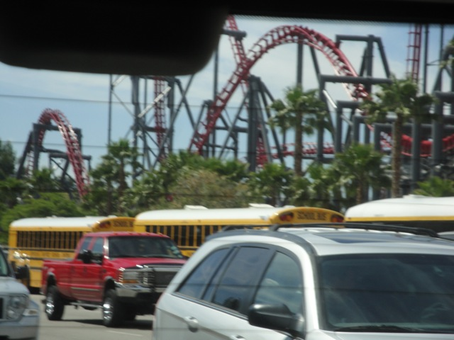
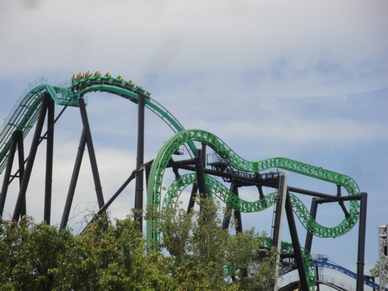
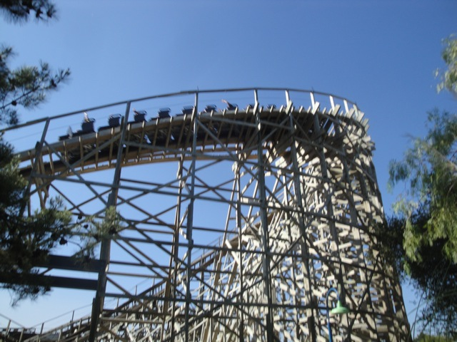
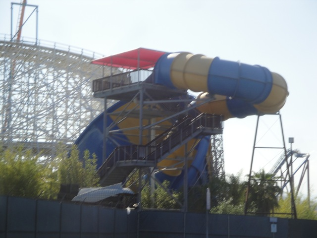

June SFMM 2011
Well, since there was now a credit at Six Flags Magic Mountain that I did not have, I had to change that. So we decided to take a visit to Six Flags Magic Mountain.

Uh oh. How many buses do I see?
Oh sh*t. There's like a bazillion buses here. And according to Celeste, today was Super Honor Roll Day, as two of Ventura's Middle Schools were here today.
 This visit makes all the schoolkids in our last schoolkid swarmed update look like just a few fleas. And considering how many schoolkids were there that day, that's saying alot.
This visit makes all the schoolkids in our last schoolkid swarmed update look like just a few fleas. And considering how many schoolkids were there that day, that's saying alot.
We are f*cked.
 All right. Time for us to get a new credit.
All right. Time for us to get a new credit.
Aww. I was hoping to find this in the Gift Shop. =(
 Luckily for us, schoolkids aren't interested in Roller Skaters. They only care about major stuff, so at least we were able to accomplish our main goal.
Luckily for us, schoolkids aren't interested in Roller Skaters. They only care about major stuff, so at least we were able to accomplish our main goal.
 Wee!!! Roller Skaters are fun!!!
Wee!!! Roller Skaters are fun!!!
 Credit #224.
Credit #224.
I would totally call this a success and a very good edition to Six Flags Magic Mountain.
Hello. My name is Charlie and I'm a cactus. Gimme some more thorns.
I love Vekoma Rides.

Speaking of new SFMM coasters, Green Lantern is finally complete. =)
I've said it before, and I'll say it again. No matter how crowded the park gets, Scream never tends to have a long line.
 Dude, Scream was hauling ass today. I loved it.
Dude, Scream was hauling ass today. I loved it.
 And suprisingly enough, DejaVu was actually open today. Guess whatever they did to it after I left my shift yesterday actually worked.
And suprisingly enough, DejaVu was actually open today. Guess whatever they did to it after I left my shift yesterday actually worked.
Get paid to go on TV, ride rides, and answer random questions that I'm embarresed that people don't know such as "Who is our Vice President?", Sure why not!!!
 Thank you Riddlers Revenge for having a single riders line. That almost makes up for the extra harsh mid course brakes today.
Thank you Riddlers Revenge for having a single riders line. That almost makes up for the extra harsh mid course brakes today.
Sweet!!! Something for Green Lantern.
SUPER SUICIDE!!!!!!!!
Why don't they actually sell these awesome flavors such as Fanta Fruit Punch? Oh well, still not as bad as what Crush did where they sold new and exciting flavors at CSUN for a semester such as Crush Cherry, Crush Lime, and Crush Pineapple, and then just take it away next semester. F*CK YOU!!!!!!!!!
Well, on the bright side, if there's one thing schoolkids are good for, it's for soaking on Log Jammer. Hey, they may not have had any Pink Sweater Girl Jrs toady, but they're still awesome to soak.
All the rides at SFMM had really long lines, which sucked. So we left and went to Sky High, and that kicked ass.
Because of all the school kids yesterday, we decided to then go back to Six Flags Magic Mtn the very next day. And while there were still too many damn school kids, it wasn't nearly as bad as yesterday.
 While we were unable to have a morning marathon today, at least we got a nice front seat ride.
While we were unable to have a morning marathon today, at least we got a nice front seat ride.
I'm really looking foreword to this ride.
Oh, and they finished the Green Lantern Station. And man, does it look NICE!!!!!!
*Sigh* Oh Tidal Wave. When are you going to actually get a real splash?
 We actually managed to get on Superman: Escape from Krypton today. And it was kicking major ass as usual.
We actually managed to get on Superman: Escape from Krypton today. And it was kicking major ass as usual.
While in line for X2, I found $10.00 rolled up just lying on the ground. Guess it's just my lucky day. =)
Blugh, I really don't care.
GRRZZZ!!!!! ME ZOMBIE CODY!!!!!! ME SUDDENLYS FEEL LIKE SH*T!!!! I ACTEDED LIKE I WAS DRUNK WHEN IN REALITY, IZ JUST DOWN!!!! GIVE ZOMBIE CODY TRASH CAN SO ZOMBIE CAN PUKE UP HALF DIGESTED WENDYS EVERYWHERES!!!!!
 X2 vs Viper! FIGHT!!!!!!!
X2 vs Viper! FIGHT!!!!!!!
 Speaking of Viper, we rode it. It was fun.
Speaking of Viper, we rode it. It was fun.
"Please don't remind Zombie Cody that Zombie Cody rideded Viper. Viper made Zombie Cody feeled much more zombieish. Zombie Cody needs couch to escape from zombieish feeling that Zombie Cody hases."

While Zombie Cody does nothing to unzombie himself, I took a ride on Apocalypse. Meh, it was fun.
Hey, if it comes in a can, it must be of high quality.
 All right. Later that evening, there was a special Employees Only Party at Six Flags Hurricane Harbor. Unfortunetly, Zombie Cody did not unzombie himself in time, so he rode nothing. (Well, at least the best slides, Taboo Tower and Venom Drop, pictured above, were both closed anyway.)
All right. Later that evening, there was a special Employees Only Party at Six Flags Hurricane Harbor. Unfortunetly, Zombie Cody did not unzombie himself in time, so he rode nothing. (Well, at least the best slides, Taboo Tower and Venom Drop, pictured above, were both closed anyway.)

The only slides open were Tiki Falls, Bamboo Racer, and Tornado. Which is fun and awesome and all. And they did serve us dinner, which was also awesome. And I definetly thought that the employee only party was awesome. (It's great having this after your first day working at SFMM.)
Home